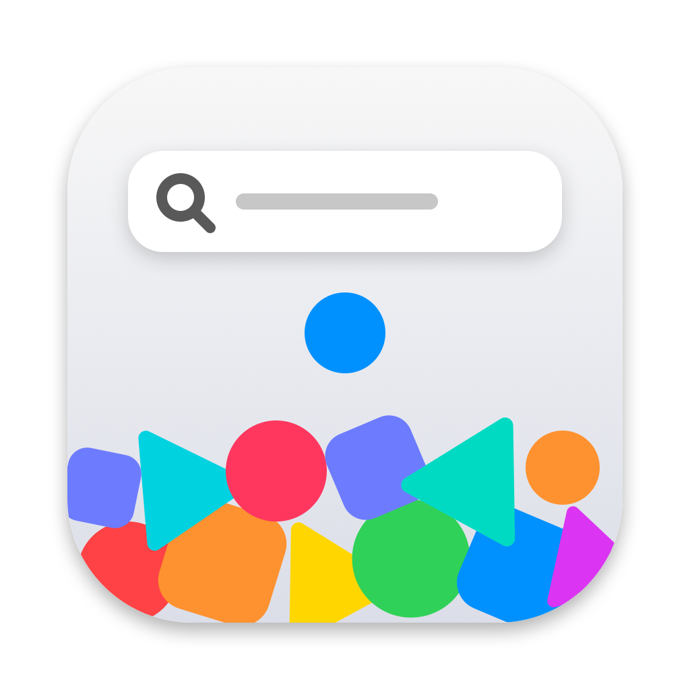

FindSFSymbols
Describe a symbol in plain words. The matches float up out of a physics pile. Click one and its name is on your clipboard.
brew install --cask tornikegomareli/tap/findsfsymbolscurl -fsSL https://raw.githubusercontent.com/tornikegomareli/FindSFSymbols/main/install.sh | bashDownload the zip · Source on GitHub · macOS 14 or later, notarized by Apple
Search by meaning
"bad weather" finds the storm cloud and the tornado. The first stage runs on your Mac. With a TypeSafe key, Jev scores the best 48 candidates.
The score is physics
A sure match floats high and holds still. A weak match hangs low and wobbles. A rejected symbol falls back into the pile.
From any app
Press ⌃ ⌥ Space, type, click. The panel closes and the name is pasted where you were.
Safe for old iOS
Set your deployment target. Symbols that need a later iOS turn gray and stay low, so you do not ship a blank icon.
Play with it
Drag a symbol and throw it. Shake the window and the pile slides with real inertia.
Private
No analytics and no account. Without a key the app makes no network requests. The key stays in your Keychain.